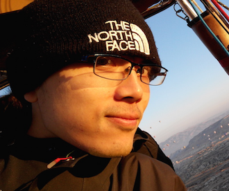

Technical manager in Baidu Inc. and specializing in digital AD business. Six plus years' hands-on experience as a staff software engineer. Experienced with all stages of the development and business cycle. Strong background in digital AD business, team management, develop process and system architecture.
- Highlights
-
Digital Advertising
- Large scale digital Advertising system
- Modelling
-
Programming and System Design
- Java/JavaEE, python2, js/css (Angularjs 1/Bootstrap 3 etc.)
- Micro Service Oriented Architecture
- Distributed System design
- Real time System
-
LBS
- Routing server
- Enterprise LBS system
- Accomplishments
-
Business
- Standardized, modeled and unified all digital AD systems in Baidu Union
- EBuilt largest AD Exchange server in China
-
Technical
- 1st MSOA design system in Baidu (2015)
- 1st real-time AD Billing system (Billions of transactions per day) in Baidu (2013)
-
Team management
- Hired, trained and managed a team of 20+ skilled software engineers
- Healthy team structure and low turnover rate
- Honors
-
Baidu
- "Wonderful Team" Award (Business group honor 2014)
- "Good performance Engineer" Award (company honor 2013)
- "Best Freshman as an Engineer" Award (company honor 2011)
-
Telenav
- Organized the 1st Baskball match (2010)
- Experience
-
Baidu Inc. Technical Manager (M2A) - Shanghai - 2014-2016
- Manager of R&D team which is responsible for DSP/ADX web server
- Thoroughly understanding the business model and system implementation in PC and Mobile Ads
- Team members are distributed in Beijing and Shanghai.
Baidu Inc. Staff Engineer (T6) - Shanghai - 2011-2014
- Responsible for Digital AD system architect and made plans to the technology roadmap for the team.
- Developing language: Java, python and bash etc.
Telenav Inc. Senior Software Engineer - Shanghai - 2008-2011
- Build backend system for enterprise application in LBS.
- Developing language: Java and JS.
Easypass Inc. Software Engineer - Shanghai - 2006-2008
Where I began my career as a software engineer.
- Hobbies and etc.
-